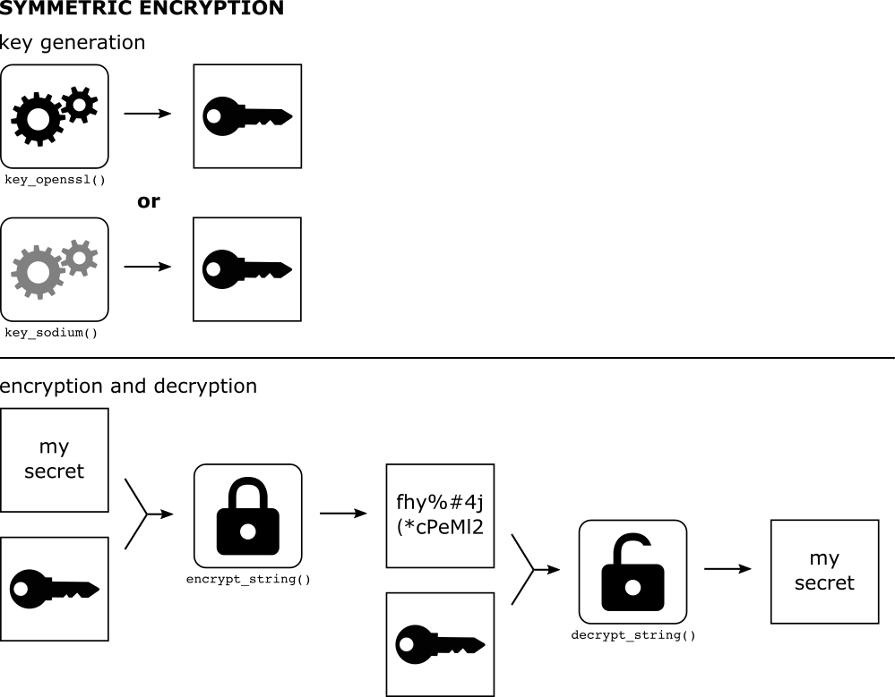
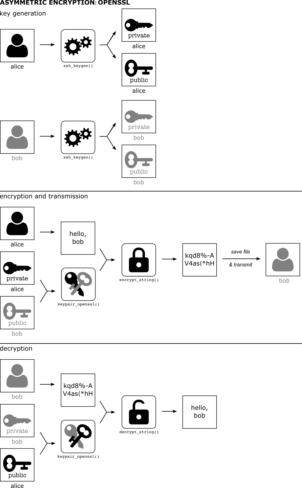

This package tries to smooth over some of the differences in encryption approaches (symmetric vs. asymmetric, sodium vs. openssl) to provide a simple interface for users who just want to encrypt or decrypt things.
The scope of the package is to protect data that has been saved to disk. It is not designed to stop an attacker targeting the R process itself to determine the contents of sensitive data. The package does try to prevent you accidentally saving to disk the contents of sensitive information, including the keys that could decrypt such information.
This vignette works through the basic functionality of the package.
It does not offer much in the way of an introduction to encryption
itself; for that see the excellent vignettes in the openssl
and sodium packages (see vignette("crypto101")
and vignette("bignum") for information about how encryption
works). This package is a wrapper around those packages in order to make
them more accessible.
Keys and the like
To encrypt anything we need a key. There are two sorts of key “types” we will concern ourselves with here “symmetric” and “asymmetric”.
“symmetric” keys are used for storing secrets that multiple people need to access. Everyone has the same key (which is just a bunch of bytes) and with that we can either encrypt data or decrypt it.
a “key pair” is a public and a private key; this is used in communication. You hold a private key that nobody else ever sees and a public key that you can copy around all over the show. These can be used for a couple of different patterns of communication (see below).
We support symmetric keys and asymmetric key pairs from the
openssl and sodium packages (which wrap around
industry-standard cryptographic libraries) - this vignette will show how
to create and load keys of different types as they’re used.
The openssl keys have the advantage of a standard key
format, and that many people (especially on Linux and macOS) have a
keypair already (see below if you’re not sure if you do). The
sodium keys have the advantage of being a new library,
starting from a clean slate rather than carrying with it accumulated
ideas from the last 20 years of development.
The idea in cyphr is that we can abstract away some
differences in the types of keys and the functions that go with them to
create a standardised interface to encrypting and decrypting strings, R
objects, files and raw vectors. With that, we can then create wrappers
around functions that create files and simplify the process of adding
encryption into a data workflow.
Below, I’ll describe the sorts of keys that cyphr
supports and in the sections following describe how these can be used to
actually do some encryption.
Symmetric encryption

This is the simplest form of encryption because everyone has the same key (like a key to your house or a single password). This raises issues (like how do you store the key without other people reading it) but we can deal with that below.
openssl
To generate a key with openssl, you can use:
k <- openssl::aes_keygen()which generates a raw vector
k## aes f6:1f:80:6e:45:8f:bd:3d:0b:af:31:7d:81:5a:7e:9c(this prints nicely but it really is stored as a 16 byte raw vector).
The encryption functions that this key supports are
openssl::aes_cbc_encrypt,
openssl::aes_ctr_encrypt and
openssl::aes_gcm_encrypt (along with the corresponding
decryption functions). The cyphr package tries to abstract
this away by using a wrapper `cyphr::key_openssl
key <- cyphr::key_openssl(k)
key## <cyphr_key: openssl>With this key, one can encrypt a string with
cyphr::encrypt_string:
secret <- cyphr::encrypt_string("my secret string", key)and decrypt it again with cyphr::decrypt_string:
cyphr::decrypt_string(secret, key)## [1] "my secret string"See below for more functions that use these key objects.
sodium
The interface is almost identical using sodium symmetric keys. To
generate a symmetric key with libsodium you would use
sodium::keygen
k <- sodium::keygen()This is really just a raw vector of length 32, without even any class attribute!
The encryption functions that this key supports are
sodium::data_encrypt and sodium::data_decrypt.
To create a key for use with cyphr that knows this,
use:
key <- cyphr::key_sodium(k)
key## <cyphr_key: sodium>This key can then be used with the high-level cyphr encryption functions described below.
Asymmetric encryption (“key pairs”)

With asymmetric encryption everybody has two keys that differ from everyone else’s key. One key is public and can be shared freely with anyone you would like to communicate with and the other is private and must never be disclosed.
In the sodium package there is a vignette
(vignette("crypto101")) that gives a gentle introduction to
how this all works. In practice, you end up creating a pair of keys for
yourself. Then to encrypt or decrypt something you encrypt messages with
the recipient’s public key and they (and only they) can decrypt
it with their private key.
One use for asymmetric encryption is to encrypt a shared secret (such as a symmetric key) - with this you can then safely store or communicate a symmetric key without disclosing it.
openssl
Let’s suppose that we have two parties “Alice” and “Bob” who want to talk with one another. For demonstration purposes we need to generate SSH keys (with no password) in temporary directories (to comply with CRAN policies). In a real situation these would be on different machines (Alice has no access to Bob’s key!) and these keys would be password protected.
path_key_alice <- cyphr::ssh_keygen(password = FALSE)
path_key_bob <- cyphr::ssh_keygen(password = FALSE)Note that each directory contains a public key
(id_rsa.pub) and a private key (id_rsa).
dir(path_key_alice)## [1] "id_rsa" "id_rsa.pub"
dir(path_key_bob)## [1] "id_rsa" "id_rsa.pub"Below, the full path to the key (e.g., .../id_rsa) could
be used in place of the directory name if you prefer.
If Alice wants to send a message to Bob she needs to use her private key and his public key
pair_a <- cyphr::keypair_openssl(path_key_bob, path_key_alice)
pair_a## <cyphr_keypair: openssl>with this pair she can write a message to “bob”:
secret <- cyphr::encrypt_string("secret message", pair_a)The secret is now just a big pile of bytes
secret## [1] 58 0a 00 00 00 03 00 04 06 00 00 03 05 00 00 00 00 05 55 54 46 2d 38 00 00
## [26] 02 13 00 00 00 04 00 00 00 18 00 00 00 10 2c 0a fe 50 93 4c 59 2d d6 33 b8
## [51] d3 74 df d9 b1 00 00 00 18 00 00 01 00 72 fb 76 32 59 05 79 e2 64 67 bb 0c
## [76] 64 1f b3 ea ca c6 64 21 59 a5 62 70 10 b6 fe e9 12 09 2e 11 13 e4 bc e8 8e
## [101] 62 7f 14 00 21 a0 d4 68 d5 73 4a a9 d6 e6 19 2e 18 8d e7 a0 79 8b 86 0c 1f
## [126] a2 45 58 5f 9d df 0a 3b 84 df e2 33 99 f4 b4 cd 1a ca 09 f8 6a 72 50 73 f1
## [151] ef ba 73 86 a4 e3 82 d8 52 a6 e3 46 7c 0f 4d 7f c5 77 bc 2a 93 0e b0 5d 51
## [176] 64 69 5a dd fc 22 01 35 4a 3e 90 86 e9 00 86 00 db 16 b6 22 1d b0 32 ea a3
## [201] fa 71 0c fb 22 1a 9f 7d 9b 0b e1 8f 6c 9a cb d1 9a 15 9f 7c 0c 84 2e 49 f7
## [226] 24 3f 8f 9f 6e 3a 1b 82 c9 ba d5 e3 91 f1 e1 69 80 ab 3f f0 f1 f3 e8 42 63
## [251] 60 3e f0 a4 68 9d dc f4 7d 39 f9 5d 4f 42 0c 1b 68 d4 5c 2b 91 0e ee ca 5c
## [276] c4 9b 15 bc 35 d7 cd 1e e9 a3 cb da 1b 24 be a6 d6 35 1c c0 80 3a 4e ea 7f
## [301] 24 3a f1 5d db 79 f0 85 9a 38 fe fc 02 e7 d3 f9 51 52 fe 00 00 00 18 00 00
## [326] 00 10 93 c7 fb 6b a2 63 bc 30 7f 66 57 09 19 e9 68 73 00 00 00 18 00 00 01
## [351] 00 10 0b f7 ab 79 51 4c a7 9c df a1 af 85 1d e5 68 fe 4f 88 ed 77 08 00 04
## [376] 32 0c 28 fe ce 65 ba 7c 51 9e 5e b5 94 a9 c6 ba b3 c8 c3 68 fa 61 93 55 0e
## [401] c6 7a aa 48 e4 e0 f9 b4 f5 2d 27 2c df 4b 43 b3 d7 11 c0 82 c1 b1 75 1c 9e
## [426] 1f 97 d6 55 f5 de ac 1d 08 9e e2 b0 2b ff 33 d6 50 86 7c 1d 3f df 98 74 49
## [451] 12 4d c1 da 5a 12 cb 6a 46 78 74 c3 ac 45 91 a5 6a e4 eb 01 3c 1a ab 75 24
## [476] af df eb 30 4f 8d 1a d8 fb 48 66 88 cb 72 a3 ff bb 8a 53 9a 11 9d f6 26 fd
## [501] 29 c3 4f 27 43 71 9b e4 47 83 15 54 26 be e2 45 e1 6a ed 1a 90 5b c0 f7 03
## [526] 89 1b eb 78 b2 5d 6a 16 62 3d 87 10 2c dc 38 be cd a9 cf ab d2 13 65 51 b9
## [551] a4 d1 49 87 e0 19 01 44 a7 90 29 ab de 54 17 36 5f b1 29 b9 d4 8c 5c ef 8b
## [576] 53 9b 63 3a 45 72 07 ab cb 82 6c 9d 12 5a f2 fe 35 d1 ba 76 19 ae 83 fd 1d
## [601] bb e4 4d bc 7d 48 81 00 00 04 02 00 00 00 01 00 04 00 09 00 00 00 05 6e 61
## [626] 6d 65 73 00 00 00 10 00 00 00 04 00 04 00 09 00 00 00 02 69 76 00 04 00 09
## [651] 00 00 00 07 73 65 73 73 69 6f 6e 00 04 00 09 00 00 00 04 64 61 74 61 00 04
## [676] 00 09 00 00 00 09 73 69 67 6e 61 74 75 72 65 00 00 00 feNote that unlike symmetric encryption above, Alice cannot decrypt her own message:
cyphr::decrypt_string(secret, pair_a)## Error in `openssl::decrypt_envelope()`:
## ! OpenSSL error: 009881BD787B0000:error:03000082:digital envelope routines:EVP_CIPHER_CTX_set_key_length:invalid key length:../crypto/evp/evp_enc.c:1046:For Bob to read the message, he uses his private key and Alice’s public key (which she has transmitted to him previously).
pair_b <- cyphr::keypair_openssl(path_key_alice, path_key_bob)With this keypair, Bob can decrypt Alice’s message
cyphr::decrypt_string(secret, pair_b)## [1] "secret message"And send one back of his own:
secret2 <- cyphr::encrypt_string("another message", pair_b)
secret2## [1] 58 0a 00 00 00 03 00 04 06 00 00 03 05 00 00 00 00 05 55 54 46 2d 38 00 00
## [26] 02 13 00 00 00 04 00 00 00 18 00 00 00 10 37 d9 71 c6 67 96 43 a4 67 db 99
## [51] 8a 2e 4b cf 56 00 00 00 18 00 00 01 00 0f 9e 8b 89 d3 97 3f 99 5f ce cf d6
## [76] e0 9e 61 66 f0 b9 a8 f5 3a f7 b0 4f 2f 61 14 4d 89 05 9b 7b 36 74 17 57 e7
## [101] d8 23 51 4c a6 66 db dc 55 ef e8 03 93 34 4b 5a 8e b4 e5 22 e2 c1 37 f3 90
## [126] eb 1c 6c 47 0a 41 ae 27 e3 5f 7f 51 33 22 51 5c fd 81 6a 76 3a 60 e0 f0 ba
## [151] 86 3b b7 60 85 61 16 13 7c 3c 82 56 c5 a1 d1 0b 23 e3 0a 31 1e 85 53 8a 99
## [176] d3 83 22 81 d3 89 9c d2 42 af 11 8c 2c 8d 8e 7e 2e c9 a0 66 bf 82 85 59 3b
## [201] 38 9a 33 9c b6 6c 6f cc 1f 06 9a 1d ab 0d 3a 8b fe 66 c5 e9 1d 92 2d 44 95
## [226] fc 19 e5 ae 1e 0f d6 a2 37 db 62 4a b6 bf 14 f1 7f da 57 bc 7d c7 01 e9 bc
## [251] 07 37 46 cf 15 3e 0b c6 9a f8 b1 fd 79 5e 69 50 5c d2 c4 e7 aa 55 64 85 2a
## [276] 85 98 e9 5f 33 41 8c 92 ca 43 d0 c4 f7 91 a6 58 00 72 b0 f1 68 81 f7 91 e4
## [301] bd 88 f1 45 eb 46 19 41 32 ec 84 5a 08 13 9f 9e 6d fa 3f 00 00 00 18 00 00
## [326] 00 10 76 19 7a 08 63 28 53 ca 61 10 54 0f 79 f3 87 43 00 00 00 18 00 00 01
## [351] 00 a6 86 ec 30 13 05 34 5b 94 4b 1e dc 97 1d f6 c0 2a dd ae ba 72 55 19 84
## [376] ac 30 81 34 15 2f 22 22 47 b2 32 20 91 be b6 c3 68 d4 3c cc 6e 84 76 d6 20
## [401] 06 e4 e2 18 7c 25 4e 34 bd 7e 0e 64 99 c1 b8 81 6e b0 27 8a de fa 29 ea cd
## [426] fc 73 dc 57 58 74 79 e2 30 f5 a3 ff 94 45 06 44 e7 a6 3b 26 0b 76 68 11 29
## [451] 32 31 fc ca b5 79 c9 2f 80 79 a9 76 48 a2 af 9f 9b 96 dc df e7 86 3f 6b ae
## [476] d3 07 ea af e2 fc e5 19 fa c8 9e 09 39 d4 b0 a5 90 f1 16 ba b8 b0 5b de 10
## [501] 8d a9 1d 2c e7 fe ad 31 ce af 26 34 7c 7d d1 32 04 dc ee f9 be f0 9e 28 6c
## [526] f8 42 a8 07 c7 9e 1a f0 6c 20 18 ef 1c 84 b6 76 ab db 8d 57 d3 41 5b 0a 52
## [551] 88 ae 49 05 3e 32 14 b6 31 2b 58 ff 3f 01 89 5d ac 3f 8d 04 68 3b 70 b2 46
## [576] 29 56 a9 3b 64 08 78 ae 4f 5d 32 9d 11 b3 74 5b 99 86 48 fd f1 70 85 01 cd
## [601] 42 da 79 1d 14 06 1f 00 00 04 02 00 00 00 01 00 04 00 09 00 00 00 05 6e 61
## [626] 6d 65 73 00 00 00 10 00 00 00 04 00 04 00 09 00 00 00 02 69 76 00 04 00 09
## [651] 00 00 00 07 73 65 73 73 69 6f 6e 00 04 00 09 00 00 00 04 64 61 74 61 00 04
## [676] 00 09 00 00 00 09 73 69 67 6e 61 74 75 72 65 00 00 00 fewhich she can decrypt
cyphr::decrypt_string(secret2, pair_a)## [1] "another message"Chances are, you have an openssl keypair in your .ssh/
directory. If so, you would pass NULL as the path for the
private (or less usefully, the public) key pair part. So to send a
message to Bob, we’d include the path to Bob’s public key.
pair_us <- cyphr::keypair_openssl(path_key_bob, NULL)This all skips over how Alice and Bob will exchange this secret information. Because the secret is bytes, it’s a bit odd to work with. Alice could save the secret to disk with
secret <- cyphr::encrypt_string("secret message", pair_a)
path_for_bob <- file.path(tempdir(), "for_bob_only")
writeBin(secret, path_for_bob)And then send Bob the file for_bob_only (over email or
any other insecure medium).
and bob could read the secret in with:
secret <- readBin(path_for_bob, raw(), file.size(path_for_bob))
cyphr::decrypt_string(secret, pair_b)## [1] "secret message"As an alternative, you can “base64 encode” the bytes into something that you can just email around:
secret_base64 <- openssl::base64_encode(secret)
secret_base64## [1] "WAoAAAADAAQGAAADBQAAAAAFVVRGLTgAAAITAAAABAAAABgAAAAQN07Xghi96gzNdQFXVhsZxQAAABgAAAEAZwPrx86pRp+u5FOTBmzmaG/IcCh4XLcfcPCdXBkollIEjOl0qEH91Ekr9bpnaNqGTqeew50xK/Gibyz/Dom9ib+jbpOBO4jD/eMPNL8mqnyPHWAaZDh28xYlBeRIRoaoFRDnF32Kx+ZoQAhdjMBpT141tBHtvyx8RHQGt2wlpEKFNjG0RNT8c8lmeJIvRSPsYZegk5h1cmWdTrArm/gQllCMZySc/fYjpCncebCJqeteH9G/JjguhLwKm+C6Tp5rOv5bOlGvudzhE0LG/BXKCAkxJ9kfKQREgwARTVMQazmwVvrQNpBEKnYp/lVt+OEtTUZCDyGmTSkB+YYUEtOswwAAABgAAAAQb7MQzhaChnJY6cr0Lc+zqgAAABgAAAEAEAv3q3lRTKec36GvhR3laP5PiO13CAAEMgwo/s5lunxRnl61lKnGurPIw2j6YZNVDsZ6qkjk4Pm09S0nLN9LQ7PXEcCCwbF1HJ4fl9ZV9d6sHQie4rAr/zPWUIZ8HT/fmHRJEk3B2loSy2pGeHTDrEWRpWrk6wE8Gqt1JK/f6zBPjRrY+0hmiMtyo/+7ilOaEZ32Jv0pw08nQ3Gb5EeDFVQmvuJF4WrtGpBbwPcDiRvreLJdahZiPYcQLNw4vs2pz6vSE2VRuaTRSYfgGQFEp5Apq95UFzZfsSm51Ixc74tTm2M6RXIHq8uCbJ0SWvL+NdG6dhmug/0du+RNvH1IgQAABAIAAAABAAQACQAAAAVuYW1lcwAAABAAAAAEAAQACQAAAAJpdgAEAAkAAAAHc2Vzc2lvbgAEAAkAAAAEZGF0YQAEAAkAAAAJc2lnbmF0dXJlAAAA/g=="This can be converted back with
openssl::base64_decode:
identical(openssl::base64_decode(secret_base64), secret)## [1] TRUEOr, less compactly but also suitable for email, you might just convert the bytes into their hex representation:
secret_hex <- sodium::bin2hex(secret)
secret_hex## [1] "580a000000030004060000030500000000055554462d3800000213000000040000001800000010374ed78218bdea0ccd750157561b19c500000018000001006703ebc7cea9469faee45393066ce6686fc87028785cb71f70f09d5c19289652048ce974a841fdd4492bf5ba6768da864ea79ec39d312bf1a26f2cff0e89bd89bfa36e93813b88c3fde30f34bf26aa7c8f1d601a643876f3162505e4484686a81510e7177d8ac7e66840085d8cc0694f5e35b411edbf2c7c447406b76c25a442853631b444d4fc73c96678922f4523ec6197a093987572659d4eb02b9bf81096508c67249cfdf623a429dc79b089a9eb5e1fd1bf26382e84bc0a9be0ba4e9e6b3afe5b3a51afb9dce11342c6fc15ca08093127d91f2904448300114d53106b39b056fad03690442a7629fe556df8e12d4d46420f21a64d2901f9861412d3acc300000018000000106fb310ce1682867258e9caf42dcfb3aa0000001800000100100bf7ab79514ca79cdfa1af851de568fe4f88ed77080004320c28fece65ba7c519e5eb594a9c6bab3c8c368fa6193550ec67aaa48e4e0f9b4f52d272cdf4b43b3d711c082c1b1751c9e1f97d655f5deac1d089ee2b02bff33d650867c1d3fdf987449124dc1da5a12cb6a467874c3ac4591a56ae4eb013c1aab7524afdfeb304f8d1ad8fb486688cb72a3ffbb8a539a119df626fd29c34f2743719be44783155426bee245e16aed1a905bc0f703891beb78b25d6a16623d87102cdc38becda9cfabd2136551b9a4d14987e0190144a79029abde5417365fb129b9d48c5cef8b539b633a457207abcb826c9d125af2fe35d1ba7619ae83fd1dbbe44dbc7d4881000004020000000100040009000000056e616d6573000000100000000400040009000000026976000400090000000773657373696f6e00040009000000046461746100040009000000097369676e6174757265000000fe"and the reverse with sodium::hex2bin:
## [1] TRUE(this is somewhat less space efficient than base64 encoding.
As a final option, you can just save the secret with
saveRDS and read it in with readRDS like any
other option. This will be the best route if the secret is saved into a
more complicated R object (e.g., a list or data.frame).
See the other cyphr vignette
(vignette("data", package = "cyphr")) for a suggested
workflow for exchanging secrets within a team, and the wrapper functions
below for more convenient ways of working with encrypted data.
Do you already have an ssh keypair? To find out, run
cyphr::keypair_openssl(NULL, NULL)One of three things will happen:
you will be prompted for your password to decrypt your private key, and then after entering it an object
<cyphr_keypair: openssl>will be returned - you’re good to go!you were not prompted for your password, but got a
<cyphr_keypair: openssl>object. You should consider whether this is appropriate and consider generating a new keypair with the private key encrypted. If you don’t then anyone who can read your private key can decrypt any message intended for you.you get an error like
Did not find default ssh public key at ~/.ssh/id_rsa.pub. You need to create a keypair.
To create a keypair, you can use the cyphr::ssh_keygen()
function as
cyphr::ssh_keygen("~/.ssh")This will create the keypair as ~/.ssh/id_rsa and
~/.ssh/id_rsa.pub, which is where cyphr will
look for your keys by default. See ?ssh_keygen for more
information. (On Linux and macOS you might use the
ssh-keygen command line utility. On windows, PuTTY` has a
utility for creating keys.)
sodium
With sodium, things are largely the same with the
exception that there is no standard format for saving sodium keys. The
bits below use an in-memory key (which is just a collection of bytes)
but these can also be filenames, each of which contains the contents of
the key written out with writeBin.
First, generate keys for Alice:
the public key is derived from the private key, and Alice can share that with Bob. We next generate Bob’s keys
Bob would now share is public key with Alice.
If Alice wants to send a message to Bob she again uses her private key and Bob’s public key:
pair_a <- cyphr::keypair_sodium(pub_b, key_a)As above, she can now send a message:
secret <- cyphr::encrypt_string("secret message", pair_a)
secret## [1] 52 40 bf 17 79 a6 af dc c9 e5 be af 4a e5 fd c1 9f 66 d0 ce e6 d5 30 51 7a
## [26] 49 b0 9a 9f 2c f5 00 f1 58 04 52 8b b9 ca 8e 8f 93 d9 71 79 fa 06 fd 7b b2
## [51] c5 48 cb 06Note how this line is identical to the one in the
openssl section.
To decrypt this message, Bob would use Alice’s public key and his private key:
pair_b <- cyphr::keypair_sodium(pub_a, key_b)
cyphr::decrypt_string(secret, pair_b)## [1] "secret message"Encrypting things
Above, we used cyphr::encrypt_string and
cyphr::decrypt_string to encrypt and decrypt a string.
There are several such functions in the package that encrypt and
decrypt
- R objects
encrypt_object/decrypt_object(using serialization and deserialization) - strings:
encrypt_string/decrypt_string - raw vectors:
encrypt_data/decrypt_data - files:
encrypt_file/decrypt_file
For this section we will just use a sodium symmetric encryption key
key <- cyphr::key_sodium(sodium::keygen())For the examples below, in the case of asymmetric encryption (using
either cyphr::keypair_openssl or
cyphr::keypair_sodium) the sender would use their private
key and the recipient’s public key and the recipient would use the
complementary key pair.
Objects
Here’s an object to encrypt:
obj <- list(x = 1:10, y = "secret")This creates a bunch of raw bytes corresponding to the data (it’s not really possible to print this as anything nicer than bytes).
secret <- cyphr::encrypt_object(obj, key)
secret## [1] 05 66 95 60 38 88 06 d2 27 f9 61 e3 23 98 8d 0f 42 7a 82 aa f1 d5 88 8e 1f
## [26] e3 70 b9 92 95 3f 8f f2 cf eb da e4 7b 1f 7c c6 7b 77 fa 1e d2 70 64 b2 da
## [51] 57 6f e7 aa f3 27 dc 2c 53 0c 29 e1 7f 42 fc ee 0a ca 3e ea 58 5e 31 41 0e
## [76] 4b 52 11 1e c8 50 84 c8 03 91 08 29 2a 9c 97 02 b2 95 09 78 cc 0a 24 8d 16
## [101] 54 1c 51 f2 11 08 d9 7c ad bf 53 5e bc 94 bb 17 a1 d3 9c c4 81 e0 b4 a3 62
## [126] a7 86 68 b3 d3 5c 94 59 33 f8 c3 70 fe 7b dc 84 17 fd 0d 87 77 2f 51 be 7e
## [151] 44 4f 13 0e 09 2d f5 e2 f0 ab ed 45 fc 9b 41 24 8e de b8 31 ec 98 87 fb 62
## [176] c0 f2 ae f4 f2 b9 df 41 77 31 fa ae 8e 13 a8 4c f1 8e af c1 f1 ae 69 79 3c
## [201] 54 95 7b 24 12 e8 d3 57 ba d2 74 7e 68 7b 16 95 f8 f7 68 60 64 4d 8e 1f f0
## [226] a4 1d 06 8c be 5b f8 b4 0e 4b 6b 0d 02 08 e3 b2 ce f4 6c 12 ad c5 62 63 b0
## [251] 11 94 31 7cThe data can be decrypted with the decrypt_object
function:
cyphr::decrypt_object(secret, key)## $x
## [1] 1 2 3 4 5 6 7 8 9 10
##
## $y
## [1] "secret"Optionally, this process can go via a file, using a third argument to the functions (note that temporary files are used here for compliance with CRAN policies - any path may be used in practice).
path_secret <- file.path(tempdir(), "secret.rds")
cyphr::encrypt_object(obj, key, path_secret)There is now a file called secret.rds in the temporary
directory:
file.exists(path_secret)## [1] TRUEthough it is not actually an rds file:
readRDS(path_secret)## Error in `readRDS()`:
## ! unknown input formatWhen passed a filename (as opposed to a raw vector),
cyphr::decrypt_object will read the object in before
decrypting it
cyphr::decrypt_object(path_secret, key)## $x
## [1] 1 2 3 4 5 6 7 8 9 10
##
## $y
## [1] "secret"Strings
For the case of strings we can do this in a slightly more lightweight
way (the above function routes through serialize /
deserialize which can be slow and will create larger
objects than using charToRaw / rawToChar)
secret <- cyphr::encrypt_string("secret", key)
secret## [1] 0a 57 44 8c 1a 6b 97 60 d3 bc b1 0c 51 b0 99 48 9f cf 00 f5 96 48 87 e8 6f
## [26] 7f 07 f3 55 67 42 8e d5 c5 03 21 ca 90 e2 4a a8 4e cb fa 24 5eand decrypt:
cyphr::decrypt_string(secret, key)## [1] "secret"Plain raw data
If these are not enough for you, you can work directly with raw
objects (bunches of bytes) by using encrypt_data:
dat <- sodium::random(100)
dat # some random bytes## [1] 19 04 55 70 cf 95 33 d7 4c 93 a1 ac 6d 09 0d 28 47 a5 55 c4 4b 5c 91 f0 58
## [26] e5 3c ca a4 ba 67 8d c2 9d 89 48 28 3f 4b eb 65 d3 ad e2 07 a8 63 51 32 6a
## [51] 0e 8d 23 34 d3 13 91 7e 7f 95 40 5a aa 44 b7 79 2f 4e ba f2 a3 19 cc ca 93
## [76] 4e ad fe a3 19 26 2d c7 31 c8 19 0b c7 15 00 ad 6d f1 c4 3e 4d 0a 67 6d ad
secret <- cyphr::encrypt_data(dat, key)
secret## [1] 8b 1a 94 d6 61 7d b4 c0 82 03 b2 59 ac 96 96 c1 89 30 57 fb 43 31 6e 68 40
## [26] 69 96 97 12 73 ff 45 58 24 39 e2 73 db fa 71 07 0d e4 d3 a1 cf 46 5c 22 dd
## [51] 8b 4f 7f b7 73 e8 95 2f 87 2b 12 9e 16 65 31 c1 c9 29 43 f1 6a 54 89 2e df
## [76] d7 c1 aa 0d ed dc 2d 45 97 57 ff 98 be 4c f6 9b 68 bf 1c b0 17 fd fd cd c5
## [101] f3 4b 50 a1 99 ba 47 25 7c 58 5d 32 1a bc 3e 12 5c 99 77 95 c0 dd 27 52 6c
## [126] 45 2f 97 b3 60 0b fb 3a 2e 6c 77 fe 12 36 c9Decrypted data is the same as a the original data
identical(cyphr::decrypt_data(secret, key), dat)## [1] TRUEFiles
Suppose we have written a file that we want to encrypt to send to someone (in a temporary directory for compliance with CRAN policies)
You can encrypt that file with
path_data_enc <- file.path(tempdir(), "iris.csv.enc")
cyphr::encrypt_file(path_data_csv, key, path_data_enc)This encrypted file can then be decrypted with
path_data_decrypted <- file.path(tempdir(), "idis2.csv")
cyphr::decrypt_file(path_data_enc, key, path_data_decrypted)Which is identical to the original:
## /tmp/RtmpvmY4Q2/iris.csv /tmp/RtmpvmY4Q2/idis2.csv
## "5fe92fe6a2c1928ef5a67b8939fdaf8d" "5fe92fe6a2c1928ef5a67b8939fdaf8d"An even higher level interface for files
This is the most user-friendly way of using the package when the aim
is to encrypt and decrypt files. The package provides a pair of
functions cyphr::encrypt and cyphr::decrypt
that wrap file writing and file reading functions. In general you would
use encrypt when writing a file and decrypt
when reading one. They’re designed to be used like so:
Suppose you have a super-secret object that you want to share privately
key <- cyphr::key_sodium(sodium::keygen())
x <- list(a = 1:10, b = "don't tell anyone else")If you save x to disk with saveRDS it will
be readable by everyone until it is deleted. But if you encrypted the
file that saveRDS produced it would be protected and only
people with the key can read it:
(see below for some more details on how this works).
This file cannot be read with readRDS:
readRDS(path_object)## Error in `readRDS()`:
## ! unknown input formatbut if we wrap the call with decrypt and pass in the
config object it can be decrypted and read:
## $a
## [1] 1 2 3 4 5 6 7 8 9 10
##
## $b
## [1] "don't tell anyone else"What happens in the call above is cyphr uses “non
standard evaluation” to rewrite the call above so that it becomes
(approximately)
- use
cyphr::decrypt_fileto decrypt “secret.rds” as a temporary file - call
readRDSon that temporary file - delete the temporary file (even if there is an error in the above calls)
This non-standard evaluation breaks referential integrity (so may not
be suitable for programming). You can always do this manually with
encrypt_file / decrypt_file so long as you
make sure to clean up after yourself.
The encrypt function inspects the call in the first
argument passed to it and works out for the function provided
(saveRDS) which argument corresponds to the filename (here
"secret.rds"). It then rewrites the call to write out to a
temporary file (using tempfile()). Then it calls
encrypt_file (see below) on this temporary file to create
the file asked for ("secret.rds"). Then it deletes the
temporary file, though this will also happen in case of an error in any
of the above.
The decrypt function works similarly. It inspects the
call and detects that the first argument represents the filename. It
decrypts that file to create a temporary file, and then runs
readRDS on that file. Again it will delete the temporary
file on exit.
The functions supported via this interface are:
-
readLines/writeLines -
readRDS/writeRDS -
read/save -
read.table/write.table -
read.csv/read.csv2/write.csv -
read.delim/read.delim2
But new functions can be added with the rewrite_register
function. For example, to support the excellent rio package, whose
import and export functions take the filename
file you could use:
cyphr::rewrite_register("rio", "import", "file")
cyphr::rewrite_register("rio", "export", "file")now you can read and write tabular data into and out of a great many different file formats with encryption with calls like
The functions above use non
standard evaluation and so may not be suitable for programming or
use in packages. An “escape hatch” is provided via encrypt_
and decrypt_ where the first argument is a quoted
expression.
cyphr::encrypt_(quote(saveRDS(x, path_object)), key)
cyphr::decrypt_(quote(readRDS(path_object)), key)## $a
## [1] 1 2 3 4 5 6 7 8 9 10
##
## $b
## [1] "don't tell anyone else"Session keys
When using key_openssl, keypair_openssl,
key_sodium, or keypair_sodium we generate
something that can decrypt data. The objects that are returned by these
functions can encrypt and decrypt data and so it is reasonable to be
concerned that if these objects were themselves saved to disk your data
would be compromised.
To avoid this, cyphr does not store private or symmetric
keys directly in these objects but instead encrypts the sensitive keys
with a cyphr-specific session key that is regenerated each
time the package is loaded. This means that the objects are practically
only useful within one session, and if saved with
save.image (perhaps automatically at the end of a session)
the keys cannot be used to decrypt data.
To manually invalidate all keys you can use the
cyphr::session_key_refresh function. For example, here is a
symmetric key:
key <- cyphr::key_sodium(sodium::keygen())which we can use to encrypt a secret string
secret <- cyphr::encrypt_string("my secret", key)and decrypt it:
cyphr::decrypt_string(secret, key)## [1] "my secret"If we refresh the session key we invalidate the key
object
cyphr::session_key_refresh()and after this point the key cannot be used any further
cyphr::decrypt_string(secret, key)## Error:
## ! Failed to decrypt key as session key has changedThis approach works because the package holds the session key within
its environment (in cyphr:::session$key) which R will not
serialize. As noted above - this approach does not prevent an attacker
with the ability to snoop on your R session from discovering your
private keys or sensitive data but it does prevent accidentally saving
keys in a way that would be useful for an attacker to use in a
subsequent session.
Further reading
- The wikipedia page on Public Key cryptography has some nice diagrams that explain how key and data interact https://en.wikipedia.org/wiki/Public-key_cryptography
- The vignettes in the
openssl(vignette(package = "openssl")) andsodium(vignette(package = "openssl")) packages have explanations of how the tools used incyphrwork and interface with R.
Confused? Need help? Found a bug?
- Post an issue on the
cyphrissue tracker - Start a discussion on the rOpenSci discussion forum